El boceto es esa primera conversación honesta que uno tiene con un proyecto, donde uno duda si es buena o mala
idea lo que tiene en mente y puede pasar una de dos: La idea se cae a pedazos o tiene posibilidades de seguir
existiendo. Algunas personas creen que la magia de una buena idea depende unicamente de su destreza en el
dibujo o de la calidad de sus renders. Pero la realidad, es que así tengas el software más caro del mundo nada
te salva de un mal planteamiento inicial.
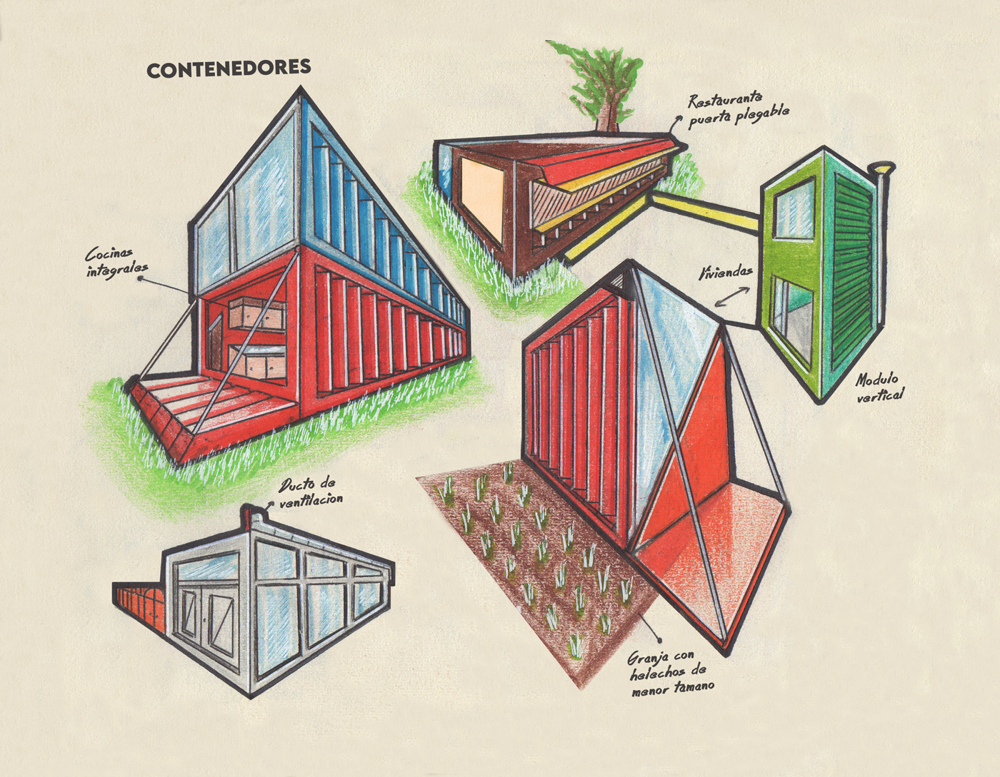
Cuando estás proyectando (especialmente cuando te mueves entre diseño industrial y diseño retail) el tiempo es
el verdadero enemigo y por tanto el papel o el trazo en digital
siguen siendo un buen punto de partida para la idea. Si el
concepto no
tiene fuerza desde el inicio, ni tres o
cuatro horas de
modelado te van a salvar en la revisión de la idea final con el cliente (El cliente no entenderá la idea y
hará cambios).
Llevar el boceto a otro nivel no se trata de hacer dibujos dignos de
galería de arte, sino de afinar una herramienta de visualización rápida que te permita anticiparte al desastre
antes de empezar a modelar.
Aquí te comparto el proceso que a mí me ha funcionado para transformar esos dibujos improvisados en la base
estructural de proyectos que realmente comunican lo que buscas:
1. La forma improvisada manda antes que la obra de arte
El error clásico es enamorarse del detalle prematuro. Buscar una obra de arte desde el inicio sin darle
prioridad a la idea que se te acaba de ocurrir es cavar tu propia tumba. Antes de preocuparte por el acabado,
asegúrate de retratar la idea básica, su forma, su función, si tiene utilidad, etc. Puedes usar textos, flechas,
referencias y todo lo que este a tu alcance para dar a entender lo que tienes en mente. Como digo, el
dibujo no tiene que ser el mejor pero si no se plasma una idea inicial, el render final solo va a ser una
mentira muy cara (Sobretodo por tiempo).
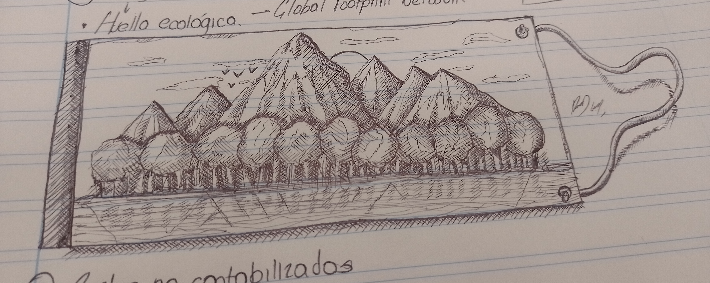
Este dibujo lo hice cuando estaba en clase, siempre me gustado garabatear cosas. En
este caso, un bonito paisaje de una isla en medio del océano.
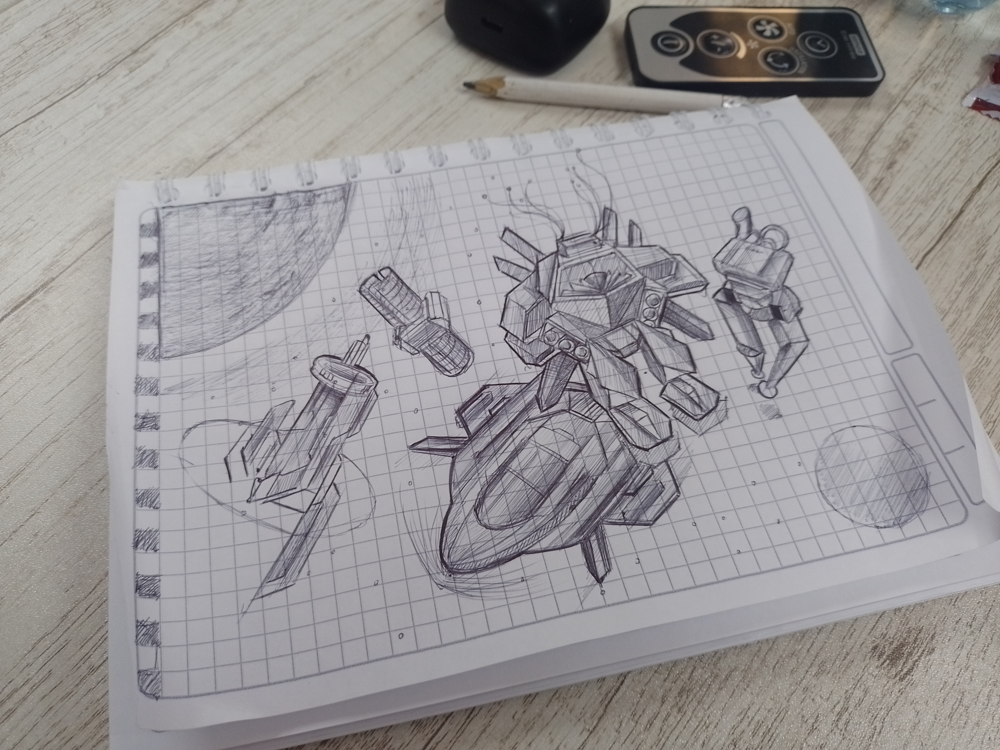
Un consejo infalible para mejorar en dibujo es tener siempre una hoja y algo para dibujar como
un lápiz o esfero al alcance. La idea es dibujar cualquier cosa sin buscar que sea perfecto.
2. Introducir detalles sin buscar perfección pero si claridad
Un boceto plano es solo una silueta. Para llevarlo a otro nivel, tienes que empezar a pensarlo en el espacio
tridimensional
desde el papel, marcando proporciones y sombras generales. No tienen que ser detalles a nivel Da Vinci, pero si
detalles que hacen que el dibujo no sea simple. Un tip que cambia todo:
mete referencias de escala. Poner una silueta humana o un elemento de referencia cotidianos no solo le da
contexto métrico a la propuesta, sino que le inyecta una narrativa de uso inmediato. La gente que ve el dibujo deja de
ver un
objeto abstracto y empiezan a imaginar la experiencia de estar frente a él. Si dibujar personas te resulta
difícil como a mí, te explicaré como puedes hacerlo de una forma rápida y efectiva en el último punto.
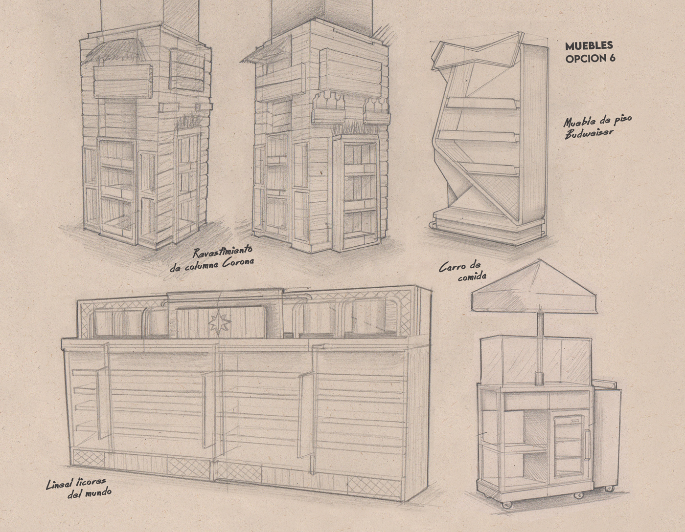
Estos son algunos de los bocetos que deben hacerse antes de llegar a una idea final.
Recomendadísimo no saltarse este paso y no dejar morir esta etapa en proceso creativo.
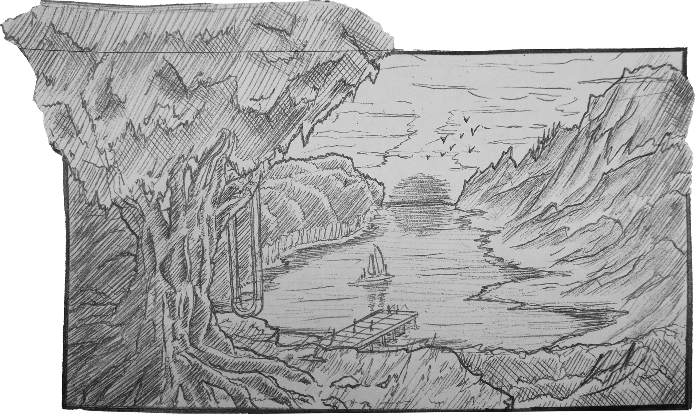
Como podrán ver, aquí ya tenemos sombras, iluminación y elementos más detallados.
Esta escena hace parte de una serie de dibujos que fueron escaneados y por eso da la sensación de que fueron
recortados.
3. Quieres llevar tu dibujo más allá pero debes hacerlo con calma
Aquí es donde el boceto deja de ser un garabato para convertirse en una herramienta de diseño real. El
siguiente nivel consiste en ajustar proporciones, dar color y limpiar las líneas guía. Cabe resaltar que a
medida que dibujes sabrás cuál es la forma más cómoda para hacerlo. Por ejemplo, a mi me gusta dibujar con
esfero o bolígrafo por lo que mis dibujos generalmente no tienen color. Me gusta dibujar sobre papel reciclado
porque me gusta el tono del papel y de vez en cuando si el tiempo me lo permite agrego uno que otro color. Un
buen boceto avanzado
ya te da indicios sobre varias cosas, por ejemplo, de qué material va a estar hecho, cómo se va a armar, cuál es
su función o en qué está inspirado.
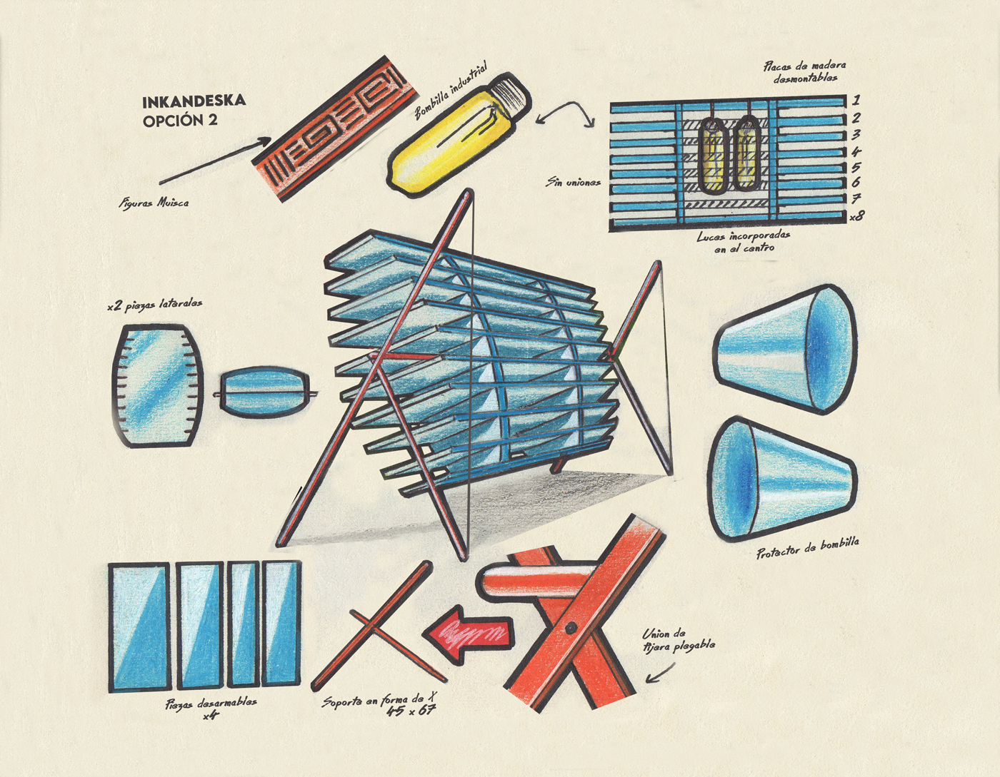
Este boceto por ejemplo, fue un proyecto que trabajé en la universidad para desarrollar una
lámpara con planos seriados.
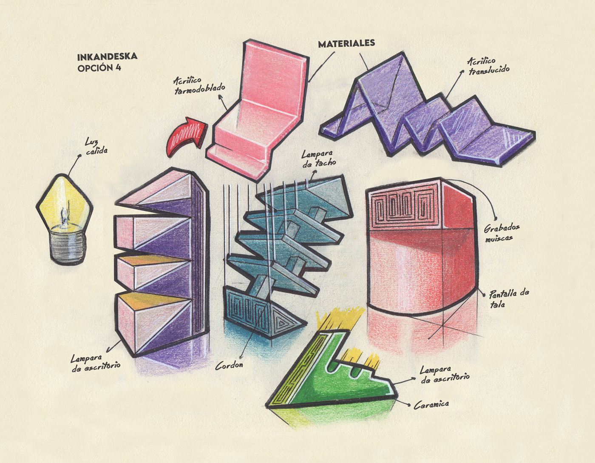
Estas fueron más propuestas de lámpara y algunas exploraciones abstractas sobre material y
forma.
4. Te doy un consejo final
Hoy por hoy hay muchas herramientas que pueden ayudar a complementar tus bocetos, claramente una de ellas es la
IA. Te mostraré el resultado de un dibujo con el que experimenté y te dejo el resultado aquí abajo.
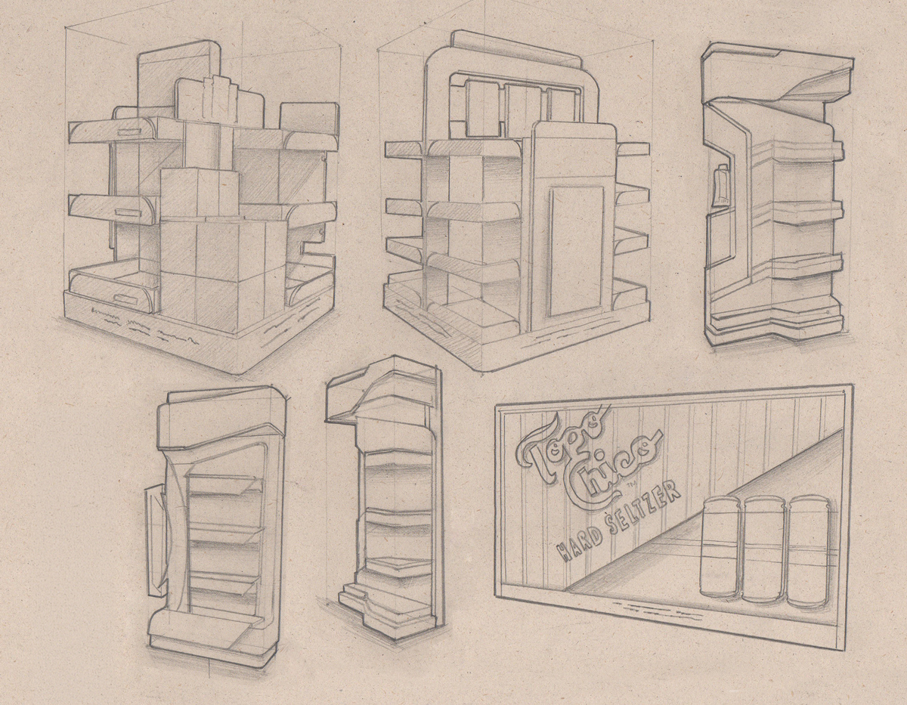
Esta es la imagen inicial.
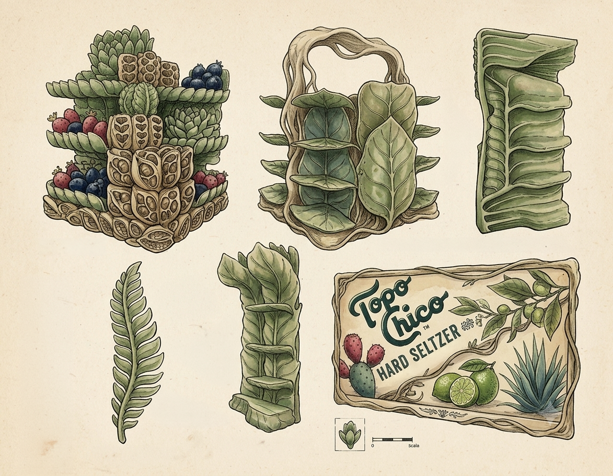
Esta es la imagen modificada. Prompt: Modifica la imagen para que tenga estilo ilustración
botánica.
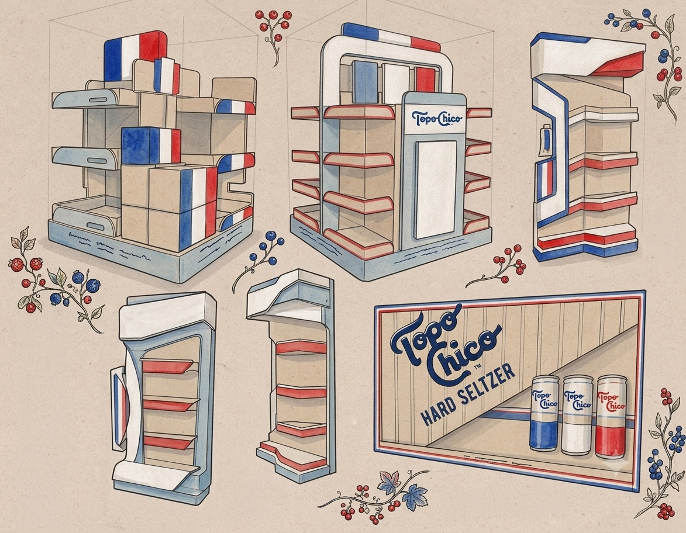
Prompt: Modifica la imagen para que tenga los colores de la bandera francesa.
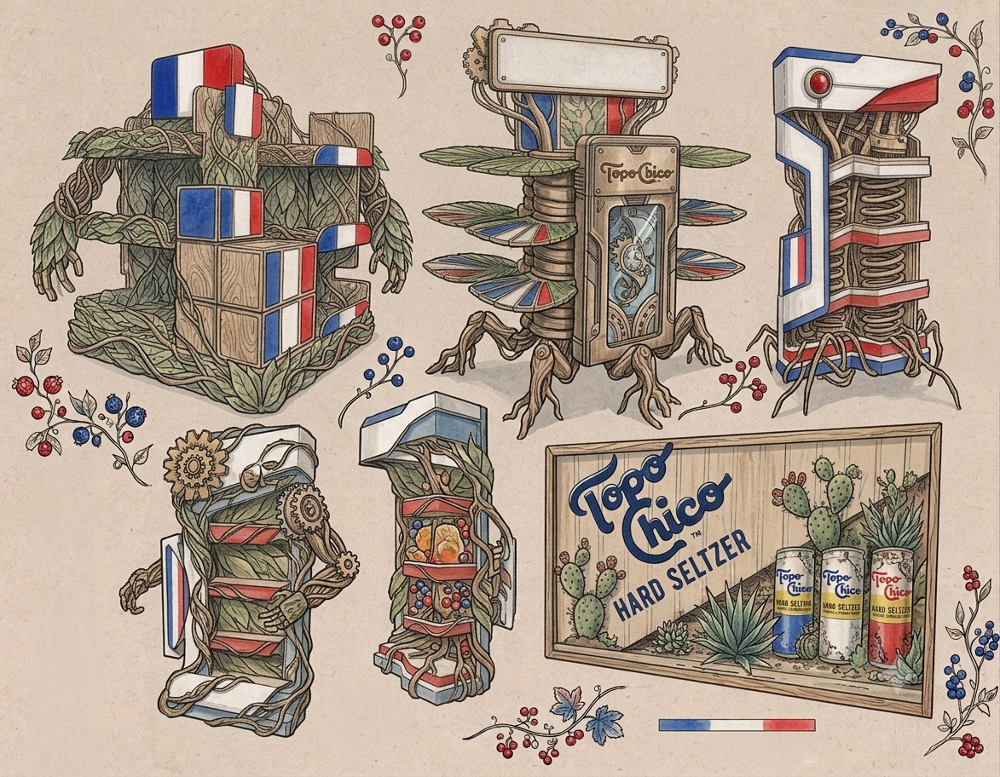
Prompt: Ahora convierte las piezas en robots.
Como podrán observar, cualquier resultado es posible. Estoy seguro que podría llegar a hacer piezas mucho más
realistas con IA pero siempre es bueno tener una base hecha por uno mismo para facilitar el resultado. Puedes
dar indicaciones hasta lograr el resultado que buscas.
Al final, dominar el boceto no es dibujar más bonito, sino pensar con más claridad. Cuando
logras que esa
primera idea en papel tenga la solidez suficiente para sostener lo que viene, te ahorras
horas de frustración frente a la pantalla y, sobre todo, garantizas que el concepto original sobreviva intacto
hasta el resultado final.

 Alejandro Romero
Alejandro Romero